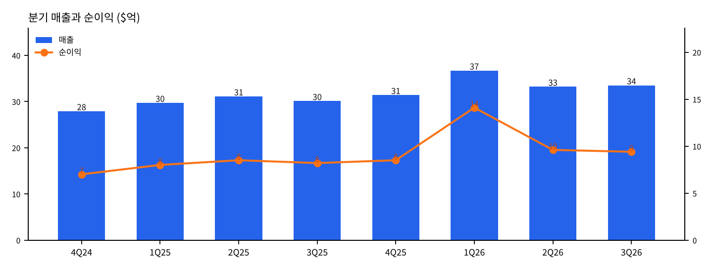
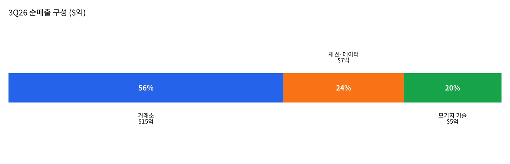
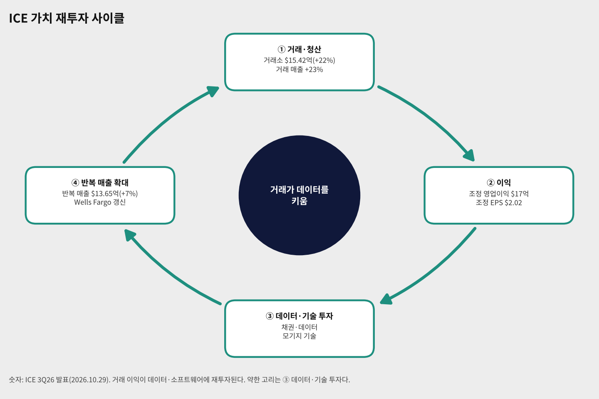

ICE는 거래소 수수료, 채권·지수 데이터 구독, 주택담보대출 소프트웨어를 함께 운영한다. 거래 매출과 반복 매출이 섞인 구조다.
| 항목 | 내용 |
|---|---|
| 종목 | Intercontinental Exchange (ICE) · NYSE · 거래소·데이터 · 조지아 애틀랜타 |
| 최근 분기(3Q26) | 순매출 $28억, 조정 EPS $2.02 |
| 핵심 사업 | NYSE, 에너지·금리 선물, 채권 데이터, ICE Mortgage Technology |
| 직원 수 | 약 12,844명(트레이딩뷰) |
| 멀티플 | PER·PEG·P/S는 08~10 항목 표 참조 |
| 직책 | 인물 | 역할·특징 |
|---|---|---|
| 회장·CEO | 제프 스프레처(Jeff Sprecher) | 역대 최고 3분기라고 설명 |
| CFO | 워런 가드너(Warren Gardiner) | 실적 설명회를 이끔 |
경영 스타일: 거래소 + 데이터 + 워크플로. 거래·청산에서 데이터·소프트웨어까지 한 고객에게 묶어 판다.
Encompass·MSP 소프트웨어로 대출 발급과 서비싱을 처리한다.
모기지·데이터에서 AI 인프라 개발을 이어간다고 설명했다.
다음 실적발표는 세 가지 질문에 답하는 자리다.
1. 거래소 거래량이 유지되나?
2. 모기지 기술이 흑자를 이어가나?
3. 데이터 매출이 늘어나나?
한 줄 판정 규칙: 첫 질문(거래소 거래량)이 유지되면 약한 고리인 ④ 모기지 수익성은 이익 기여가 작아도 전체 흐름에 큰 영향이 없다고 본다.
일정: 4Q26 실적 발표는 2027.02.11 예정(트레이딩뷰).
| 분기 | 매출 | 순이익 | EPS | 조정 EPS | 특이 사항 |
|---|---|---|---|---|---|
| 4Q24 | $27.9억 | $7.0억 | 1.21 | 1.52 | |
| 1Q25 | $29.7억 | $8.0억 | 1.38 | 1.72 | |
| 2Q25 | $31.1억 | $8.5억 | 1.48 | 1.81 | |
| 3Q25 | $30.1억 | $8.2억 | 1.42 | 1.71 | |
| 4Q25 | $31.4억 | $8.5억 | 1.49 | 1.71 | |
| 1Q26 | $36.7억 | $14.1억 | 2.48 | 2.35 | |
| 2Q26 | $33.2억 | $9.6억 | 1.69 | 1.90 | |
| 3Q26 | $33.5억 | $9.4억 | 1.67 | 2.02 | 3Q 사상 최고, 순매출 +15% |
매출은 트레이딩뷰 스캐너의 분기 총매출이라 회사가 발표한 순매출과 다를 수 있다. 트레이딩뷰 분기 매출은 회사 발표 순매출($28억)보다 큰 총매출이다. 매출·순이익·EPS(GAAP 희석)는 트레이딩뷰 스캐너, 조정 EPS는 트레이딩뷰 실적 페이지의 Reported 값이다. 분기 정렬은 오래된 분기→최신이다.

흐름 요약: 최근 분기 매출은 $33.5억로 전년 동기 $30.1억 대비 +11.3%, 순이익은 $9.4억(전년 $8.2억)다. 최근 4분기 GAAP EPS는 $7.33, 조정 EPS는 $7.98다.
| 항목 | 내용 | 3Q26 순매출 | 비고 |
|---|---|---|---|
| 거래소 | 선물·옵션·상장 | $15.42억 | +22% |
| 채권·데이터 | 채권 실행·데이터 | $6.74억 | +9% |
| 모기지 기술 | 대출·서비싱 소프트웨어 | $5.49억 | +4% |

거래소가 순매출의 절반을 넘고 가장 빨리 큰다.
ICE는 시장과 데이터·기술을 연결해 투명한 거래를 가능하게 하는 것을 목표로 한다.
| 축 | 내용 |
|---|---|
| 거래소 | NYSE·선물 |
| 데이터 | 채권·지수 |
| 소프트웨어 | 모기지 기술 |

| 이동평균 | 값 | 종가 대비 | 위치 |
|---|---|---|---|
| 5일선 | $174.60 | -1.4% | 종가 아래 |
| 20일선 | $170.62 | +0.9% | 종가 위 |
| 50일선 | $161.58 | +6.5% | 종가 위 |
| 100일선 | $155.76 | +10.5% | 종가 위 |
| 200일선 | $154.67 | +11.3% | 종가 위 |
52주 고가 $181.38(2026-11-12)·저가 $121.79(2026-06-29) 범위에서 종가 $172.16는 20일선, 50일선, 100일선, 200일선을 웃돌고 5일선은 밑돈다.
| 규칙 | 기준 | 현재 값 | 신호 |
|---|---|---|---|
| 장기 추세 필터 | 종가 vs 200일선 | $172.16 > $154.67 | 매수 |
| 중장기 교차 | 50일선 vs 200일선 | $161.58 > $154.67 | 매수 |
| 단기 교차 | 20일선 vs 50일선 | $170.62 > $161.58 | 매수 |
| 돈키언 채널 | 55일 고가 $181.38 / 저가 $147.50 | 중간값 $164.44 위 | 매수 |
| 1개월 모멘텀 | 21거래일 수익률 | +9.2% (기준 $157.69) | 매수 |
| 3개월 모멘텀 | 63거래일 수익률 | +6.8% (기준 $161.25) | 매수 |
| 6개월 모멘텀 | 126거래일 수익률 | +13.6% (기준 $151.49) | 매수 |
| 12개월 모멘텀 | 252거래일 수익률 | +12.7% (기준 $152.78) | 매수 |
| 종합 (8개 평균) | +1.00 | 강한 매수 |
해석: 매수 신호 8개(장기 추세 필터, 중장기 교차, 단기 교차, 돈키언 채널, 1개월 모멘텀, 3개월 모멘텀, 6개월 모멘텀, 12개월 모멘텀), 매도 신호 0개(없음). CTA 점수 +1.00(강한 매수). 14일 ATR $3.95 (2.3%), 52주 고가 $181.38 · 저가 $121.79.
| 가격 | 기준 | 무엇이 바뀌나 |
|---|---|---|
| $181.38 | 55일 고가 | 돌파 시 채널 상단 갱신 |
| $164.44 | 돈키언 중간값 | 55일 채널 중간값 위/아래로 신호가 바뀜 |
| $161.25 | 3개월 모멘텀 기준가 | 종가가 이 가격 위면 3개월 신호 매수 |
| $157.69 | 1개월 모멘텀 기준가 | 종가가 이 가격 위면 1개월 신호 매수 |
| $154.67 | 200일선 | 종가가 이 선 위/아래인지로 장기 추세 신호가 바뀜 |
| $152.78 | 12개월 모멘텀 기준가 | 종가가 이 가격 위면 12개월 신호 매수 |
| $151.49 | 6개월 모멘텀 기준가 | 종가가 이 가격 위면 6개월 신호 매수 |
| $147.50 | 55일 저가 | 이탈 시 채널 하단 갱신 |
가격 수준은 신호가 바뀌는 기준선일 뿐 진입·청산 가격 제안이 아니다. 20일/50일 교차는 이동평균 자체가 움직여 단일 가격으로 표시하지 않았다. 일봉·주봉은 종가 기준 직접 계산(고저 데이터 미사용)이다.
| 악재 요인 | 내용 | 강도 |
|---|---|---|
| 모기지 수익성 | 모기지 기술 영업마진 2% | 중간 |
| 금리·주택시장 | 모기지 발급 수요 변동 | 중간 |
| 거래량 의존 | 변동성 감소 시 거래 매출 감소 | 참고 |
| 티커 | 회사 | PER(TTM) | PEG | P/S | EPS 성장(YoY) |
|---|---|---|---|---|---|
| ICE | Intercontinental Exchange | 21.6배 | 1.20 | 7.13배 | +18% |
| CME | CME Group | 25.3배 | 1.40 | 15.96배 | +18% |
| NDAQ | Nasdaq | 28.8배 | 0.95 | 6.51배 | +30% |
| SPGI | S&P Global | 26.6배 | 1.21 | 8.29배 | +22% |
| MCO | Moody's | 29.3배 | 0.92 | 10.27배 | +32% |
비교 결론: ICE의 PER 21.6배는 CME Group·Nasdaq·S&P Global·Moody's보다 낮다. PEG 1.20는 CME(1.40)·S&P Global(1.21)보다 낮고 Nasdaq(0.95)·Moody's(0.92)보다 높다.
현금·부채는 트레이딩뷰 스캐너 값이다. 거래소·청산 사업이라 부채가 크다.
| 지표 | 값 | 출처 | 해석 |
|---|---|---|---|
| 현금·단기투자 | $62억 | 트레이딩뷰 스캐너(최근 분기) | |
| 총부채 | $240억 | 트레이딩뷰 스캐너(최근 분기) | |
| 순부채(부채−현금) | $178억 | 내 계산 | 현금 대비 부채 부담 |
| 잉여현금흐름(TTM) | $53억 | 트레이딩뷰 스캐너 | |
| TTM 매출 | $135억 | 트레이딩뷰 스캐너 |
| 기준 | 매출 | P/S | 비고 |
|---|---|---|---|
| 내 계산(종가 ÷ 최근 4분기 매출 합계) | $134.8억 | 7.13배 | 시총은 정렬용 데이터에서만 사용 |
| 동종(트레이딩뷰) | – | CME 15.96배 · NDAQ 6.51배 · SPGI 8.29배 · MCO 10.27배 | 11.19 |
해석: 조정 영업이익 $17억을 내는 만큼 이자 부담은 영업이익으로 충분히 가려진다(내 해석).
EBITDA는 영업활동의 현금 창출력을 보는 지표이고, PEG는 PER을 EPS 성장률로 나눈 값이다. EBITDA·FCF는 트레이딩뷰 TTM 값이다.
| 지표 | 값 | 산출 |
|---|---|---|
| EBITDA(TTM) | $79억 | 트레이딩뷰 스캐너 |
| EBITDA 마진 | 58.5% | EBITDA ÷ TTM 매출(내 계산) |
| FCF 마진 | 39.3% | FCF ÷ TTM 매출(내 계산) |
| PER(GAAP TTM) | 23.5배 | $172.16 ÷ $7.33 |
| PER(조정 TTM) | 21.6배 | $172.16 ÷ $7.98 |
| 방식 | PER | EPS 성장률 | PEG | 판정 |
|---|---|---|---|---|
| 조정 EPS (TTM $7.98) | 21.6배 | +18% ($6.76 → $7.98) | 1.20 | 기준 초과 |
| GAAP EPS (TTM $7.33) | 23.5배 | +34% ($5.49 → $7.33) | 0.70 | 투자 적격 |
판정: 조정 EPS 기준 PEG 1.20 → 1.0 초과 PEG 기준은 1.0 이하 투자 적격, 0.5 이하 적극 매수다. EPS 성장률은 최근 4분기 EPS 합계를 직전 4분기 합계와 비교한 값(내 계산)이고, 일회성 항목이 있으면 조정 EPS 행을 함께 본다.

ICE의 사이클: 거래 이익이 데이터·소프트웨어에 재투자돼 반복 매출을 늘리고, 안정된 매출이 다시 현금과 투자 여력이 되는 순환이다.
| 고리 | 현재 숫자·근거 |
|---|---|
| ① 거래·청산 | 3Q26 거래소 순매출 $15.42억(+22%) · 거래 매출 +23% |
| ② 이익 | 조정 영업이익 $17억(+19%) · 조정 EPS $2.02(+18%) |
| ③ 데이터·기술 투자 | 채권·데이터 $6.74억(+9%) · 투자 금액은 보고서에 없음 |
| ④ 반복 매출 확대 | 반복 매출 $13.65억(+7%) · Wells Fargo 계약 갱신 |
사이클의 특징: 약한 고리는 ③ 데이터·기술 투자다(투자 금액이 보고서에 없고 모기지 마진이 2%로 낮다). "(내 해석)"은 보고서 수치가 아닌 해석이다.